Data Structures and Algorithms
with Object-Oriented Design Patterns in C++
Data Structures and Algorithms
with Object-Oriented Design Patterns in C++The previous section has shown that in the worst case, the running time to insert an object into a separately chained hash table is O(1), and the time to find or delete an object is O(n). But these bounds are no better than the same operations on plain lists! Why have we gone to all the trouble inventing hash tables?
The answer lies not in the worst-case performance,
but in the average expected performance.
Suppose we have a hash table of size M.
Let there be exactly n items in the hash table.
We call the quantity  the load factor .
The load factor is simply the ratio
of the number of items in the hash table to the array length.
the load factor .
The load factor is simply the ratio
of the number of items in the hash table to the array length.
Let  be the number of items in the
be the number of items in the  linked list,
for 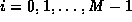.
The average length of a linked list is
linked list,
for 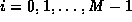.
The average length of a linked list is
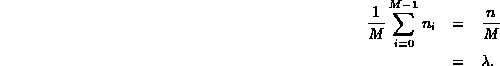
The average length of a linked list is exactly the load factor!
If we are given the load factor  ,
we can determine the average running times for the various operations.
The average running time of Insert
is the same as its worst case time, O(1)--this result does not depend on
,
we can determine the average running times for the various operations.
The average running time of Insert
is the same as its worst case time, O(1)--this result does not depend on  .
On the other hand,
the average running time for Withdraw does depend on
.
On the other hand,
the average running time for Withdraw does depend on  .
It is 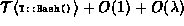 since the time required to delete an item
from a linked list of length
.
It is 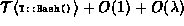 since the time required to delete an item
from a linked list of length  is
is  .
.
To determine the average running time for the Find operation, we need to make an assumption about whether the item that is being sought is in the table. If the item is not found in the table, the search is said to be unsuccessful. The average running time for an unsuccessful search is
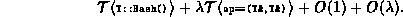
On the other hand, if the search target is in the table,
the search is said to be successful.
The average number of comparisons needed to find an arbitrary item
in a linked list of length  is
is
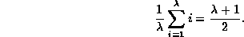
Thus, the average running time for a successful search is
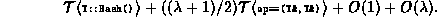
So, while any one search operation can be as bad as O(n),
if we do a large number of random searches,
we expect that the average running time will be  .
In fact, if we have a sufficiently good hash function
and a reasonable set of objects in the container,
we can expect that those objects are distributed throughout the table.
Therefore, any one search operation
will not be very much worse than the worst case.
.
In fact, if we have a sufficiently good hash function
and a reasonable set of objects in the container,
we can expect that those objects are distributed throughout the table.
Therefore, any one search operation
will not be very much worse than the worst case.
Finally, if we know how many objects will be inserted into the
hash table a priori,
then we can choose a table size M which is larger than
the maximum number of items expected.
By doing this, we can ensure that 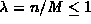.
I.e., a linked list contains no more than one item on average.
In this case, the average time for Withdraw is  and for Find it is 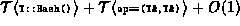.
and for Find it is 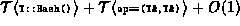.
 Copyright © 1997 by Bruno R. Preiss, P.Eng. All rights reserved.
Copyright © 1997 by Bruno R. Preiss, P.Eng. All rights reserved.